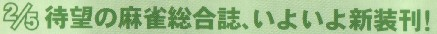
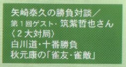
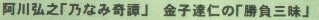
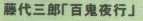
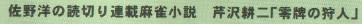

「近代麻雀」といえば、竹書房から刊行されている麻雀コミックの月刊誌。いま「月刊・近代麻雀」、「近代麻雀オリジナル」、「近代麻雀ゴールド」の３種が刊行されている。
このうち「月刊・近代麻雀」は、以前は「別冊・近代麻雀」という名前だった。どうして「別冊」かといえば、もともと「月刊・近代麻雀」という雑誌があったから。
このもともとの「月刊・近代麻雀」は、活字主体の麻雀雑誌だった。この「月刊・近代麻雀」の別冊として、コミック主体の「別冊・近代麻雀」が刊行されたもの。
そのうち「オルジナル」や「ゴールド」が刊行され、媒体が完全にコミックに移動する中で、活字主体の「月刊・近代麻雀」は廃刊されてしまった。
本家が廃刊となってしまえば、別にコミック主体の方を「別冊」と呼ぶ必要はない。そこでいつのまにか分家である「別冊」が、「月刊・近代麻雀」となった。
しかし来年２月。竹書房がもう一度、活字版の月刊誌を刊行することになった。その名前が「別冊・近代麻雀」 おろ、本家が分家になっちまった。(^-^；

再出発号は、メインが阿佐田哲也大特集。
その他も、戦術論の羅列ではなく、麻雀小説やうんちく論が多そう。



う〜ん、大いに期待しちゃうぞ。
|